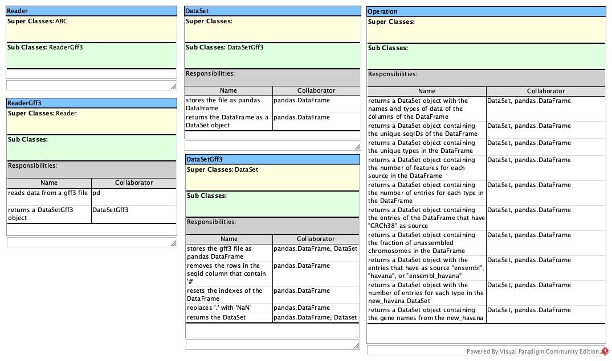
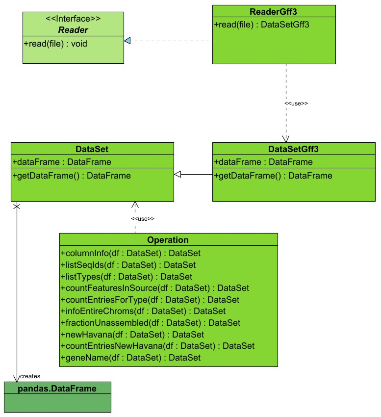

The class Reader is an abstract class, therefore it inherits from abc.ABCMeta, which is the metaclass for abc.ABC class, its only responsibility is to read data from any type of file.
The class ReaderGff3 is a subclass of the class Reader and it reads data only from a GFF3 type of file, though the pandas read_table method and returns a DataSetGff3 file, therefore it relies not only on pandas but also on the DataSetGff3 class.
The DataSet class stores the GFF3 file as a pandas DataFrame and returns the DataFrame as a DataSet object, both responsibilities have as collaborators pandas.DataFrame.
The class DataSetGff3 is a subclass of DataSet which stores the GFF3 file as a pandas DataFrame, inheriting the method from DataSet, and relying on pandas.DataFrame as well; in addition to the DataSet class, the DataSetGff3 class removes the rows in the 'seqid' column that contain '#' values, resets the indexes of the DataFrame and replaces '.' with 'Nan'. All these additional functions depend on pandas.DataFrame.
The DataSetGff3 class returns a DataFrame as a DataSet object, this responsibility therefore has as collaborators both pandas.DataFrame and DataSet.
The Operation class has 10 methods called columnInfo, listSeqIds, listTypes, countFeaturesInSource, countEntriesForType, infoEntireChroms, fractionUnassembled, newHavana, countEntriesNewHavana and geneName that return respectively a DataSet object with the names and types of data of the columns of the DataFrame, a DataSet object containing the unique seqIDs of the DataFrame, a DataSet object containing the unique types in the DataFrame, a DataSet object containing the number of features for each source in the DataFrame, a DataSet object containing the number of entries for each type in the DataFrame, a DataSet object containing the entries of the DataFrame that have 'GRCh38' as source, a DataSet object containing the fraction of unassembled chromosomes in the DataFrame, a DataSet object with the entries that have as source 'ensembl', 'havana', or 'ensembl_havana', a DataSet object with the number of entries for each type in the new_havana DataSet, a DataSet object containing the gene names from the new_havana DataSet. All these methods have as collaborator the class DataSet and pandas.DataFrame

The class ReaderGff3 realizes the interface provided by the Reader class, therefore the relation between the two classes is a realization. On the other hand there is a client-supplier relationship between the Reader_gff3 class and the DataSetGff3 class respectively, since the ReaderGff3 has to return a DataSetGff3 object, therefore the two have a dependency relationship.
Between DataSet and DataSetGff3 there is a generalization, since DataSetGff3 inherits from DataSet.
Linking the Operation class and the DataSet class there is a dependency, since all methods in the Operation class return a DataSet object.
Pandas.DataFrame class is connected to the DataSet class though a unidirectional association.

Advanced Programming project, Genomics 2022/2023 - Ruggiero Alessia, Vincenzi Francesca, Mascagni Marianna